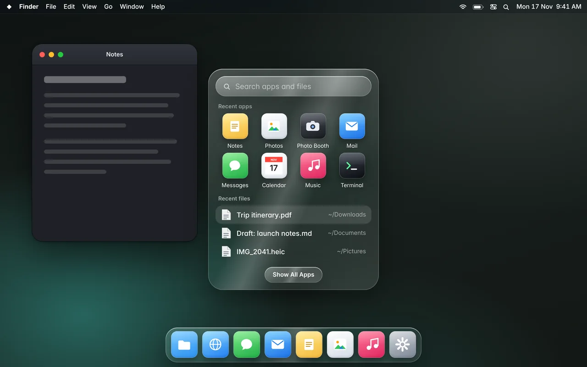

Reduce Motion
Springs give way to a short fade. Nothing scales or bounces.
For designers
Inlet doesn't redraw your app icons. It shows the icon from each app's own bundle. It follows Reduce Motion, Reduce Transparency and Increase Contrast with nothing to set up, and its motion runs on seven springs with values you can read.
Each app appears with the icon it ships with, so the grid matches Finder and the Dock. Inlet doesn't theme or replace icons. Icons are cached in one place, so the grid stays quick as it scrolls.

Every animation uses one of seven springs, each set by a duration and a bounce. Anything that opens can bounce a little. Anything that closes can't, so the dismiss spring has no bounce. With Reduce Motion on, every spring is replaced by a 0.2 second fade.
| Spring | Duration | Bounce |
|---|---|---|
| Snap | 0.24 s | 0.00 |
| Press | 0.26 s | 0.42 |
| Open | 0.46 s | 0.24 |
| Morph | 0.52 s | 0.30 |
| Rise | 0.50 s | 0.32 |
| Settle | 0.60 s | 0.18 |
| Dismiss | 0.26 s | 0.00 |
Duration is in seconds, and bounce runs from 0 to 1. These are the values Apple's Spring(duration:bounce:) takes.
Nothing needs to be set inside Inlet. It reads the macOS accessibility settings and adjusts.
Springs give way to a short fade. Nothing scales or bounces.
The glass panels switch to a solid fill with no blur.
Secondary text becomes full strength, and dividers are easier to see.
Arrange the grid in Edit mode. Group apps into folders, and swipe between pages. Your layout survives a relaunch.

Auto follows your Mac. Light and Dark stay put. The app has no theme or icon pack setting yet. Appearance is Light, Dark or Auto, and that's the full set for now.
The Appearance control on this site works the same way. It saves your choice in this browser and doesn't change the app.
Read the full feature list, or check the accessibility details on the features page.